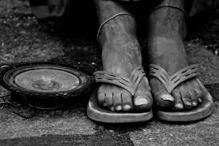

More than 1.3 billion live in extreme poverty and earn less than $1.25 a day. Most see the problem as insoluble and do not believe in mankind’s ability to reduce the world’s level of poverty and wasted lives. However, your active engagement can make a difference in addressing poverty!
Want to help eliminate this issue? See what opportunities are available for you below!

A place to meet others with interests in racial equality and chat!